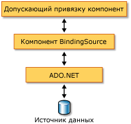

Общие сведения о компоненте BindingSource
Компонент BindingSource предназначен для упрощения процесса привязки элементов управления к источнику данных. Компонент BindingSource выступает в качестве источника и канала передачи данных для привязки других элементов управления. Он реализует абстракцию подключения данных формы, перенаправляя команды к базовому списку данных. Кроме того, можно добавлять данные непосредственно в него, поэтому сам компонент выступает и в качестве источника данных.
Компонент BindingSource в качестве посредника
Компонент BindingSource выступает в качестве источника данных для некоторых или всех элементов управления формы. В Visual Studio BindingSource можно привязать к элементу управления с помощью параметра DataBindings свойство, доступное из свойства окна. Также см. раздел Как Привязка элементов управления Windows Forms с компонентом BindingSource с помощью конструктора.
Компонент BindingSource можно привязать как к источникам простых данных, например одиночному свойству объекта или базовой коллекции, такому как ArrayList, так и к источникам сложных данных, таким как таблица базы данных. Компонент BindingSource является посредником, обеспечивающим привязку и управление валютой. Во время разработки или во время выполнения компонент BindingSource можно привязать к источнику сложных данных, указав в качестве значений его свойств DataSource и DataMember базу данных и таблицу. На следующем рисунке показано, как компонент BindingSource встраивается в существующую архитектуру привязки данных.

Note
Во время разработки некоторые действия, например перетаскивание таблицы базы данных из окна данных в пустую форму, приведут к созданию компонента BindingSource, его привязке к базовому источнику данных и добавлению элементов управления данными в одной операции. См. также Привязка элементов управления Windows Forms к данным в Visual Studio.
Компонент BindingSource в качестве источника данных
Если начать добавлять элементы в компонент BindingSource компонента без указания списка для привязки, то компонент будет действовать как источник данных в виде списка и примет эти элементы.
Кроме того, можно написать код, чтобы добавить пользовательскую функциональность "AddNew" с помощью события AddingNew, которое возникает при вызове метода AddNew перед добавлением элемента в список. Дополнительные сведения см. в разделе Архитектура компонента BindingSource.
Навигация
Для пользователей, которым необходимо перемещение данных в форме, компонент BindingNavigator предоставляет возможность перемещения данных и управления ими совместно с компонентом BindingSource. Дополнительные сведения см. в разделе Элемент управления BindingNavigator.
Обработка данных
BindingSource выступает в качестве CurrencyManager для всех привязок и, таким образом, может предоставлять доступ к сведениям о валюте и положении в зависимости от источника данных. В следующей таблице показаны члены, предоставляемые компонентом BindingSource для доступа и обработки базовых данных.
| Член | Описание |
|---|---|
| Current свойство; | Возвращает текущий элемент источника данных. |
| Position свойство; | Возвращает или задает текущую позицию в базовом списке. |
| List свойство; | Возвращает список, который является результатом вычисления DataSource и DataMember. Если свойство DataMember не задано, то возвращается список, указанный в DataSource. |
| Insert метод | Вставляет элемент в список по указанному индексу. |
| RemoveCurrent метод | Удаляет текущий элемент из списка. |
| EndEdit метод | Применяет ожидающие изменения к базовому источнику данных. |
| CancelEdit метод | Отменяет текущую операцию редактирования. |
| AddNew метод | Добавляет новый элемент в базовый список. Если источник данных реализует IBindingList и возвращает элемент из события AddingNew, то добавляется этот элемент. В противном случае запрос передается в метод AddNew списка. Если базовый список не является IBindingList, элемент автоматически создается с помощью его общего конструктора по умолчанию. |
Сортировка и фильтрация
Как правило, работа осуществляется с упорядоченным или отфильтрованным представлением источника данных. В следующей таблице показаны члены, предоставляемые компонентом BindingSource источника данных.
| Член | Описание |
|---|---|
| Sort свойство; | Если источником данных является IBindingList, то возвращает или задает имя столбца, используемого для сортировки, и порядок сортировки. Если источником данных является IBindingListView и поддерживается расширенная сортировка, то возвращает имена нескольких столбцов, используемых для сортировки, и порядок сортировки |
| Filter свойство; | Если источником данных является IBindingListView, то возвращает или задает выражение, используемое для фильтрации просматриваемых строк. |